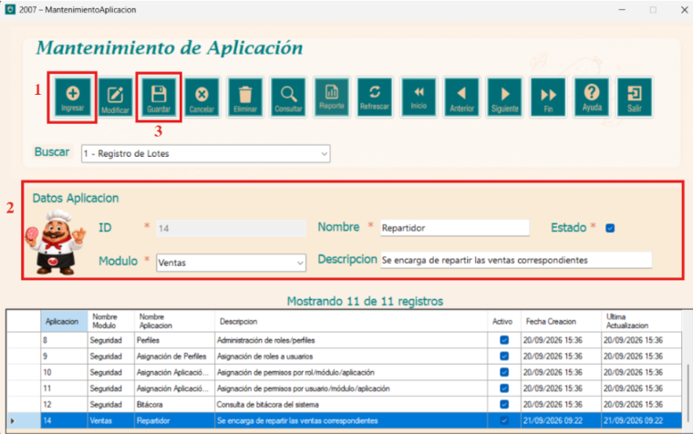
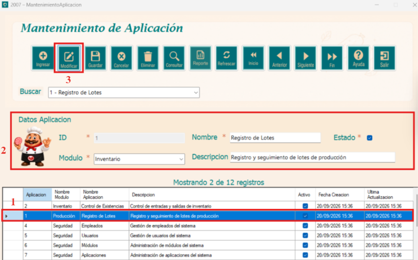
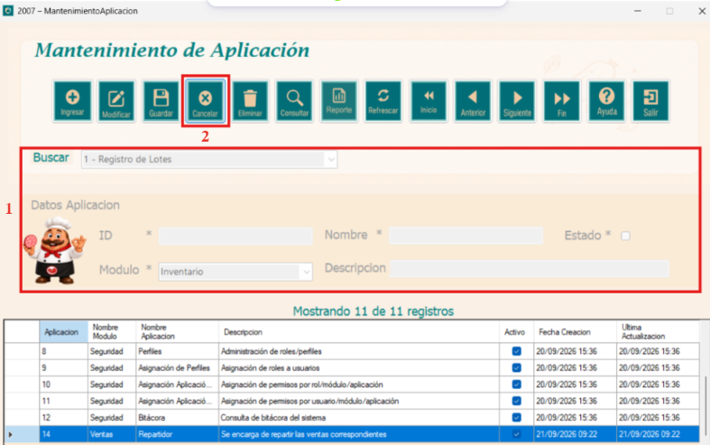
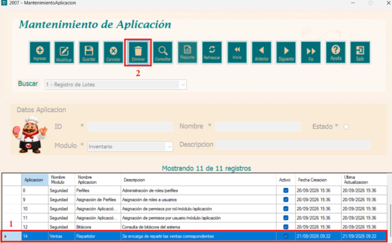
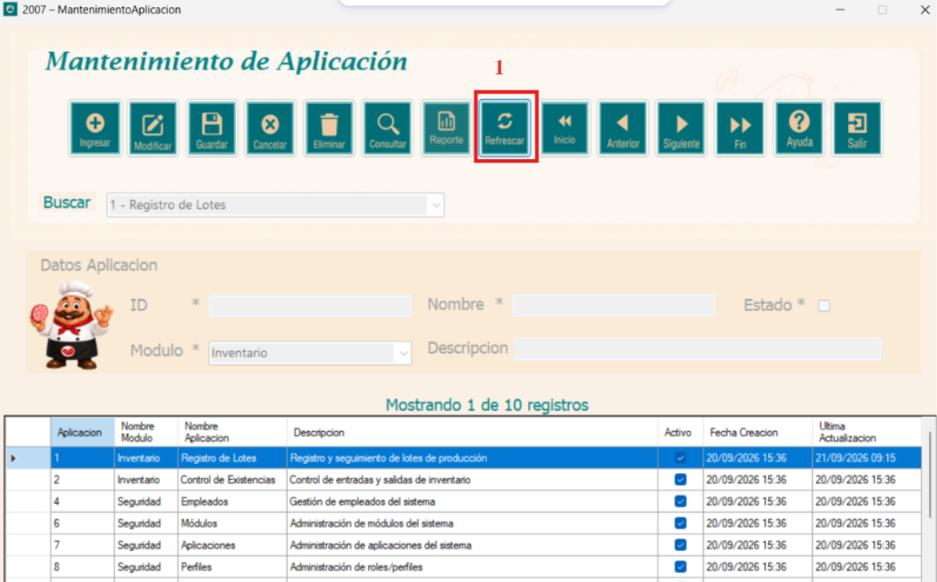

El módulo de Mantenimiento de Aplicación es parte del componente de Seguridad del sistema,
desarrollado para Embutidos de Calidad S.A. Su función principal es administrar el catálogo
de aplicaciones del sistema, permitiendo registrar, consultar, modificar y eliminar las
aplicaciones según las necesidades de la organización.
Cada aplicación está asociada a un módulo correspondiente, cuenta con un nombre, descripción y
estado que indica si se encuentra activo o inactivo. Mantener este catálogo actualizado es de
vital importancia, ya que estas aplicaciones son referenciadas por el módulo de asignación de
aplicaciones a Perfiles para controlar los accesos de cada usuario.

Esta ventana es la interfaz principal para la administración de las aplicaciones del sistema, permite registrar el nombre, descripción, módulo al que pertenece y su estado ya sea activo o inactivo de cada aplicación. Al ingresar el formulario podemos observar que se encuentra bloqueado hasta que se presione el botón Ingresar y se desbloquea la parte del formulario.

El botón Ingresar habilita el formulario para registrar una nueva aplicación. Los pasos para seguir son los siguientes: 1. Si se desea ingresar un registro se debe presionar el botón "Ingresar". 2. Se desbloquea la sección de datos y se rellenan los campos. 3. Se presiona el botón Guardar y mostrará un mensaje "Grabación exitosa".

El botón Modificar permite actualizar un registro de la base de datos. Los pasos para modificar un registro son los siguientes: 1. Seleccionar una fila de la tabla, automáticamente se rellenan los campos del formulario. 2. Se cambia el campo que se desea modificar. 3. Se presiona el botón Modificar, mostrando un mensaje de confirmación.

El botón Cancelar cancela la operación en curso y restablece el formulario a su estado inicial. Los pasos para utilizarlo son los siguientes: 1. Presionar el botón Cancelar durante cualquier operación de ingreso o modificación. 2. Los campos del formulario se limpiarán y la sección de datos volverá a bloquearse.

El botón Eliminar permite remover un registro de la tabla. Los pasos para utilizarlo son los siguientes: 1. Seleccionar el registro dentro de la tabla. 2. Presionar el botón Eliminar, aparecerá un mensaje de confirmación para eliminar el registro.

Para filtrar los datos, a continuación se detallan los pasos: 1. Seleccionar el criterio de búsqueda en el combo Buscar. 2. Presionar el botón Consultar. 3. Se mostrará en la tabla todos los registros que coincidan con el criterio ingresado. 4. También se incluye un contador de registros para mejor control del listado mostrado.

Este botón abre una ventana con el listado completo de aplicaciones registradas. Los pasos para utilizarlo son los siguientes: 1. Presionar el botón Reporte. 2. Se abrirá una ventana con el listado completo de aplicaciones, desde la barra superior es posible desplazarse entre páginas, imprimir o exportar el reporte.

Este botón recarga todos los datos desde la base de datos y restablece el formulario a su estado inicial. Los pasos para utilizarlo son los siguientes: 1. Presionar el botón Refrescar. 2. La tabla se actualizará mostrando la información más reciente registrada en el sistema.

El formulario proporciona 4 botones que permiten desplazarse entre los registros de la tabla. Los pasos para utilizarlos son los siguientes: 1. Presionar el botón Inicio para ir al primer registro. 2. Presionar el botón Anterior para retroceder al registro anterior. 3. Presionar el botón Siguiente para avanzar al registro posterior. 4. Presionar el botón Fin para ir al último registro.

El botón de salir cierra la ventana de Mantenimiento de Aplicación, se debe de seguir el siguiente paso: 1. Presionar el botón Salir o dar click en la X de la parte superior derecha. La ventana se cerrará y regresará al menú principal.